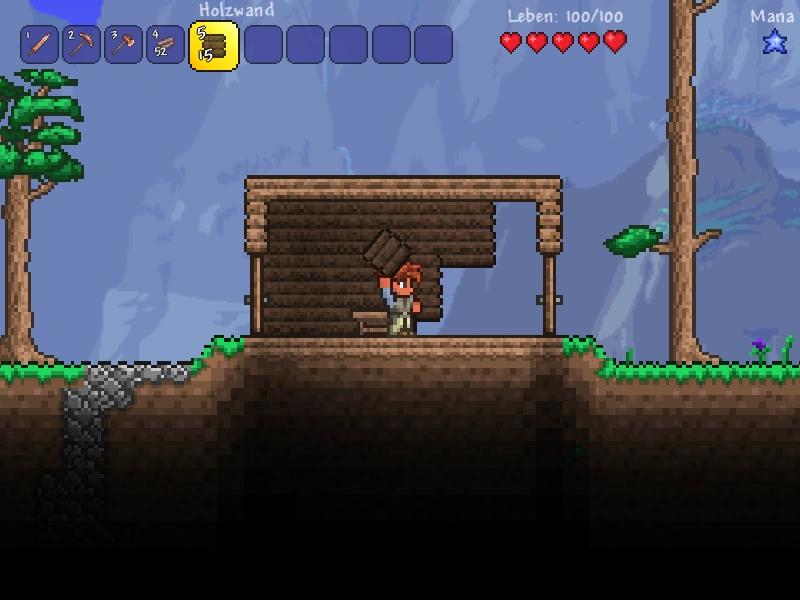

Core Gameplay Mechanics
Terraria's gameplay revolves around exploration, combat, crafting, and building. As players explore the world, they encounter various biomes, fight enemies and bosses , and collect resources to craft better weapons, tools, and armor. Below is an overview of the main gameplay elements in Terraria.
Exploration
Exploration is a key aspect of Terraria. Players start with a randomly generated 2D world, which is filled with different biomes, caves, dungeons, and treasures. The world extends far underground, where players will find rare ores and materials used for crafting powerful items.
Combat
Terraria features a wide range of enemies and bosses. From simple slimes to complex mechanical bosses, players will need to gather strong weapons and armor to defend themselves and progress through the game. Combat in Terraria is a fast-paced, and players must utilize a variety of ranged, melee, and magic weapons to succeed.
Crafting
One of the most important aspects of Terraria is crafting. Players can gather resources such as ored, wood, and other materials to craft better equipment, tools and weapons. Crafting allows players to advance through the game and prepare for tougher enemies and bosses.

Building
Players can use the materials they gather to construct buildings and structures. Building shelters or entire towns provides protection from enemies, and it also allows NPCs to move in and provide useful services such as selling items or offering quests. The building system in Terraria is versatile, allowing for unlimited creativity.
Boss Fights
Boss fights are major part of Terraria's gameplay. Each boss has unique abilities, and defeating them is necessary to unlock new content and progress in the game. The boss battles are challenging and require careful preparation, including gathering strong weapons, armor, and healing items.